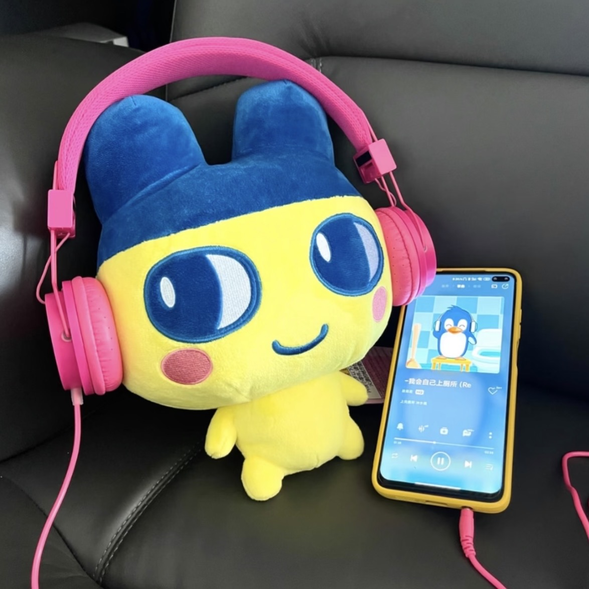
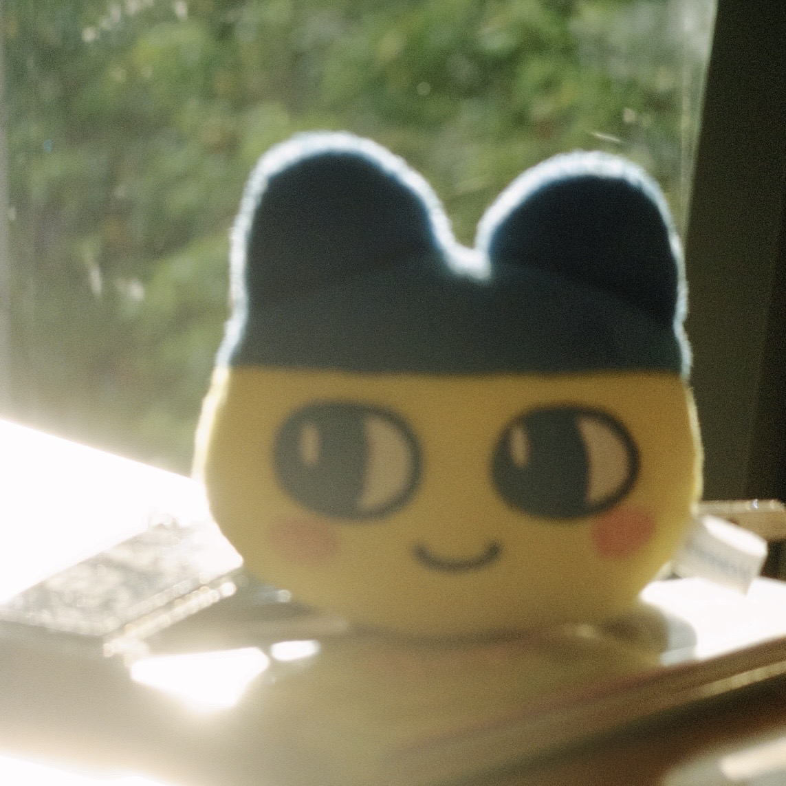
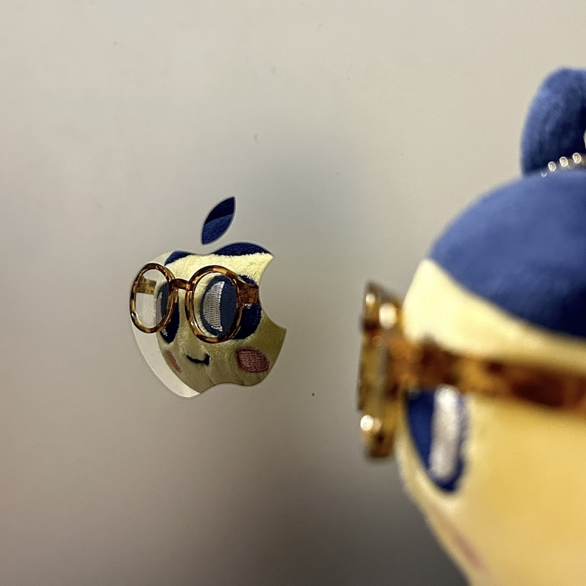
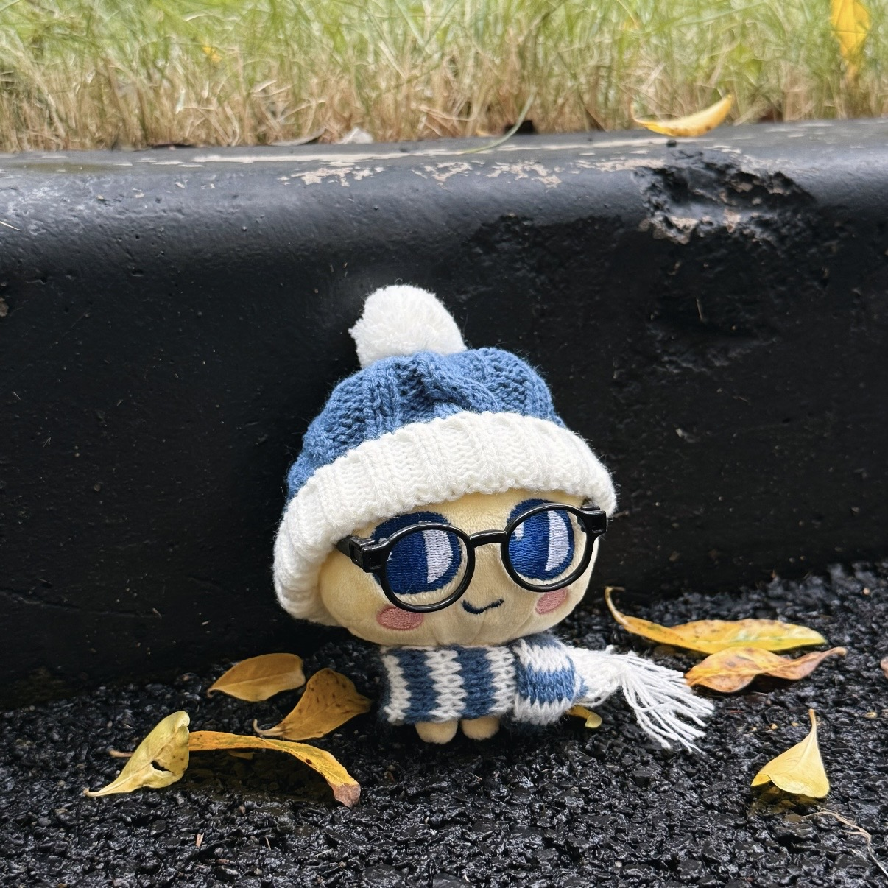
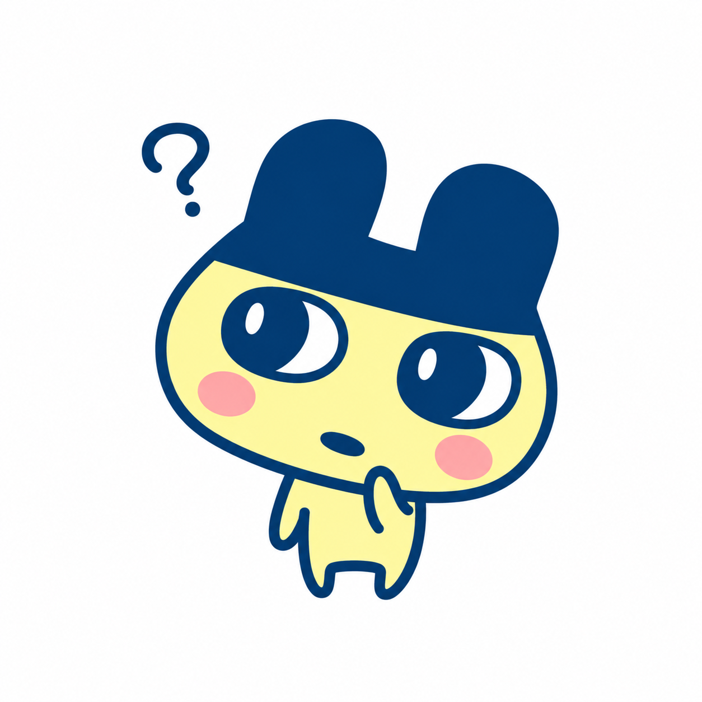

MUSIC
K-pop, concerts,
variety shows, playlists.
Just a girl with too many interests and not enough time.

K-pop, concerts,
variety shows, playlists.

Capturing moments,
editing, visual storytelling.

Everyday style,
brand culture, aesthetics.

New cities,
new perspectives.

Over the past two weeks, I have learned more about digital media, including platforms, networks and algorithms. I also started creating my own website using HTML and CSS, which was a fun experience. Through this process, I realised that digital media is not just about the content we see, but also about the technologies and design choices behind it.